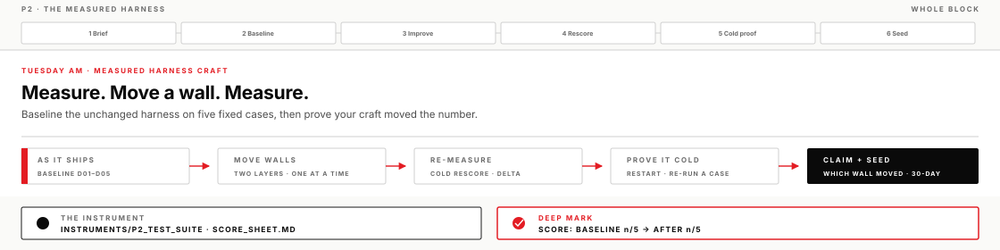
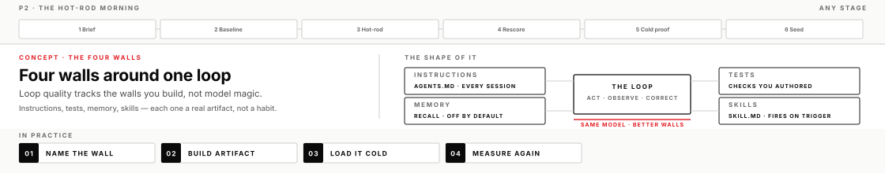
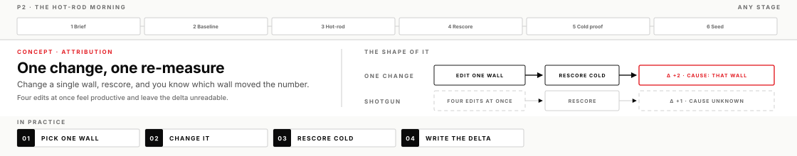
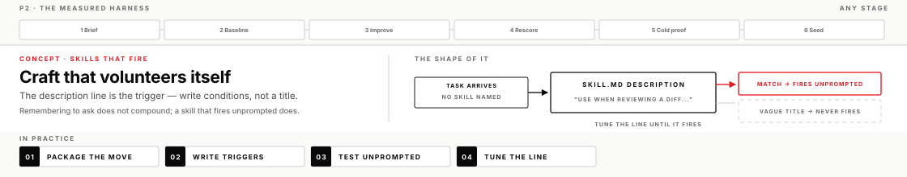

You measure the harness as it ships against five fixed cases, improve it one wall at a time, and prove the number moved. This is the craft that makes competence compound across days instead of resetting every session.
DayTuesday AM
BlockP2
Time~3–3.5 hr + case talk
ToolsCodex app · instruments/p2_test_suite
Your progress0 / 20 · 0%
Why this matters
Most people meet the same assistant fresh every morning. They re-explain their standards, re-paste their rules, and get the same generic first draft they got last week — because everything they taught it lived in a chat that is now closed. A harness is everything durable you build around the model — its four walls: the instructions it loads, the tests that check it, the memory it keeps, the skills it carries. The model is rented. The harness is yours.
This morning you treat the harness as something you can change on purpose and prove. The measurement is a fixed set of five cases, D01–D05 — five realistic tasks from your track, each shipped with a written pass condition someone other than you wrote, so an answer either meets it or does not. You score the harness as it ships against those five, change it deliberately, and score the same five again cold, in a brand-new chat that carries none of your coaching. Scoring one fixed set twice is the only way to know a change helped: if the cases move between runs, or the standard drifts, or you only ever score after, a higher number could just as easily come from an easier test as from a better harness. The delta is the proof. Numbers beat "feels smarter," and by lunch you will have the numbers.
What you will leave with
A score sheet with a real baseline, at least two wall changes, an after-score, and a delta you can defend
At least two machine-checkable tests you authored — ideally one with a red→green story
Durability proof: a brand-new chat that carries your standard without being reminded
The judgment to baseline any assistant at work, name its four walls, and improve one on purpose
Your Transfer file's Identity section plus the harness seed, written while the win is fresh
Before you start
Confirm the operator templates are in your Codex app project: DIRECTION_BRIEF.md and OPERATOR_LOG.md
Open instruments/p2_test_suite/README.md in your cloned course folder and find your track folder — engineering or mission_ops, the one you chose for the week
Know what your project loads today: if an AGENTS.md already sits at the project root, it is part of the harness as it ships — note that on the score sheet
Lead operate-along
The lead runs this same page on screen — baseline scored live, wall changes narrated, at least one change that doesn't move the number. You still run your own chair. Check a box when you finish the step, not when you watch it happen.
Before lunch · Harness case talk (45 min)
A real problem the lead solved with harnessed AI — 30 minutes of the case, 15 of discussion. Listen for problem → harness move → evidence; notice one idea you may carry into the transfer step after measurement.

How a harness actually gets better
Five ideas carry everything you're about to do. Read them once now, then come back whenever a step feels arbitrary — each one names the mechanism behind a move you'll make before lunch.
Measure before you change anything
A baseline is the score before you change anything. It sounds like bookkeeping; it is the whole game. A delta without a baseline is a story, not a measurement — "it's much better now" carries no information unless you can say better than what, on which cases, by how much.
The fixed set makes the baseline honest by holding everything still. The five cases are fixed and you don't edit them, even when an edit would make your score prettier. Each case comes with a pass-if line — an observable condition like "names the failing job, no invented file paths" — and that line is the grader, not your general impression of the answer. Baseline and after run on the same model tier, both in fresh chats. When every variable but one is pinned, the one that moved is the one you changed.
Those pass-if lines live in a file of their own, GRADER.md, one per track, holding all five conditions together. The case files the assistant reads carry only the input and the task. That separation is the point: a model shown "name the failing job, the root error line, and one concrete next action" will name exactly those three things, and you will have measured its reading comprehension rather than your harness. Never let the machine being checked see its own check — you read the conditions, it does not.
Going wrong looks like this: skipping the baseline because the unchanged harness is "obviously bad," grading generously because you're rooting for your own harness, or letting the standard drift between the first run and the second. Each one quietly converts your instrument into a mirror — it reads back whatever you want it to say. When you're unsure whether a response passed, score FAIL and write why; a strict FAIL is worth more than a hopeful PASS, because fails are where your changes come from.
At work, this is the ten-minute habit that converts tool arguments into arithmetic. Before you change any assistant — or believe any vendor — write five fixed cases from your own desk and score what you have today. Every claim of improvement after that is a number, not a feeling.
The four walls of a harness

Loop quality tracks the walls you build, not model magic. The same model inside better walls does visibly better work — which means "the AI isn't good at this" is usually a claim about your walls, not the model. There are four of them, and each is a real artifact you can point at, not a habit you promise to keep.
Instructions live in AGENTS.md at the project root. The app loads that file into every session that opens the project — it is the difference between a rule you re-type each morning and a rule the machine already has before you say hello. Instructions are cheap to add and cost attention to obey, so the best files are short: a handful of rules, each traceable to a failure you've actually seen.
Tests are checks that live outside the model and pass or fail without your judgment in the loop — a count, a required string, a forbidden pattern. Give them a file: a CHECKS.md at the project root, one predicate per line, that any session — including a cold one — can load and run against its own answer. Their power comes from independence: the system under test never grades itself. A model asked "was that good?" says yes; a test asked the same question has no opinion to flatter you with.
Memory is a recall layer — off by default until you switch it on in the app's Settings, and limited on an API key, so treat it as a convenience rather than a foundation. The distinction that matters: memory is for context worth recalling; rules that must always hold belong in AGENTS.md, the artifact you can read, diff, and commit. A must-hold rule stored in memory is a rule with an unreliable landlord.
Skills are packaged procedure: a folder holding a SKILL.md that describes a move you make repeatedly, and when to make it. The app discovers them from %USERPROFILE%\.agents\skills — one folder per skill, so that's where yours goes; older builds read %USERPROFILE%\.codex\skills instead. The confirmation that matters is the app's Skills list: a skill in the right place appears there, and that sidebar check beats any path claim — if yours is missing, restart the app so it rescans. They are how a checklist stops being something you remember and starts being something the harness carries.
When you hear "my assistant is just better at this," audit the walls before you credit the model. Two colleagues on the same tool, one producing sharp work and one producing mush, are almost always separated by artifacts, not accounts.
One change, one re-measure

Attribution means knowing which change caused which effect. It is the discipline the whole morning runs on: change a single wall, rescore, and the delta has exactly one candidate cause. Change four things at once and the delta is unreadable — the score moved, but you learned nothing you can use tomorrow, because you cannot say which edit earned its place and which three are decoration.
The mechanism is single-variable isolation, the same one behind any controlled comparison. The suite pins the cases, the model tier, and the cold-chat condition; your edit is the only free variable left. That is also why confounds matter: switch model tiers mid-morning and your delta measures the model change, not your craft — which is exactly why the suite's rule says same tier for baseline and after.
Shotgun changes feel productive. You rewrite the instructions, add three tests, enable memory, and draft a skill in one heroic pass — and the after-score moves, and you have no idea why. Worse is when it doesn't move: now you must un-pick four changes to find the one that hurt. The slow-looking path — one change, one rescore — is faster by lunch, because every measurement teaches you something you keep.
This discipline transfers to anything configurable: prompts, pipelines, team process. Anywhere someone says "we changed a bunch of things and it got better," you now hear what's missing.
Craft that survives restart
Durable means still there when the session dies. Everything you teach an assistant inside a chat lives in that chat's context — a working memory that is genuinely impressive and genuinely gone the moment the chat closes. Artifacts on disk are the other side of the line: AGENTS.md, test files, and skill folders are loaded fresh into every new session, with no dependence on what you said yesterday.
The cold re-run is the only honest test of which side of the line your standard lives on. Close the chat where you did the coaching. Open a new one. Run one case. If the standard still fires — the rule applied, the format held, the skill offered — it lives in an artifact and you own it. If the output reverts to what you saw before any changes, your craft was living in scrollback, and what felt like an improved harness was an improved conversation.
The classic self-deception here is demonstrating improvement in the same long chat where the coaching happened. Of course it performs — the entire lesson is still sitting in context. That demo proves nothing about tomorrow. The test that means something is the one where the machine has never met you today.
At work, the practical test is: could a colleague open your project cold and get your standard from the machine? If yes, you've built something the team owns. If your standard only lives in the chat scrollback, you do not own it yet — you're renting it one session at a time.
A skill that fires unprompted

A skill is a folder with a SKILL.md inside: a named, packaged procedure plus a description of when to use it. The subtle part — the part most people never learn — is that the description line is the trigger surface. When a task arrives, the assistant matches the task against skill descriptions to decide what to load. A description written as a title ("Review helper") gives it nothing to match. A description written as conditions ("Use when reviewing a diff or code snippet for security issues; checks for leaked credentials, logging of secrets…") fires on its own.
That firing is the whole point. A skill you must invoke by name is just remembering to ask, with extra steps. A skill that fires unprompted is your standard showing up on every matching task — including the ones you'd have forgotten to check, on the days you're rushed, in the sessions where you never thought to mention it. That is what compounding competence looks like from the inside: the harness volunteers your craft.
Going wrong looks quiet: the skill exists, is well-written, and never fires, so the operator concludes skills don't work. The fix is almost always the description line. Write it as trigger conditions, test it by giving the assistant a realistic task without naming the skill, and tune the line until it fires. That test-and-tune loop is the same craft as the case suite, applied to one artifact.
Before you move on
A completed lesson means more than a successful run. A single unmeasured tweak, no red→green test, or nothing surviving restart is not yet — the evidence must survive adversarial review. Full list: these P2 lesson outcomes.
If you get stuck
The baseline is eating the morning. Twenty to twenty-five minutes covers the scoring and the re-score against the pass conditions — score fast and strict, one-line notes, no polishing answers. The baseline is a reading, not a deliverable.
You don't know what to change. Your FAIL notes are the work order. Pick the single fail that annoys you most and write one rule or one test aimed at exactly that.
The after-score didn't move. First check the wall actually loads cold: is AGENTS.md at the project root, and did the new chat open the same project? If it loads and still doesn't move the score, that's a finding — write it in the claim and pick a different wall.
Time is short. Narrow the data scope — fewer walls, one targeted case re-run at a time — never the judgment standard. Pass-if lines stay strict; a smaller sweep scored honestly beats a full sweep scored soft.